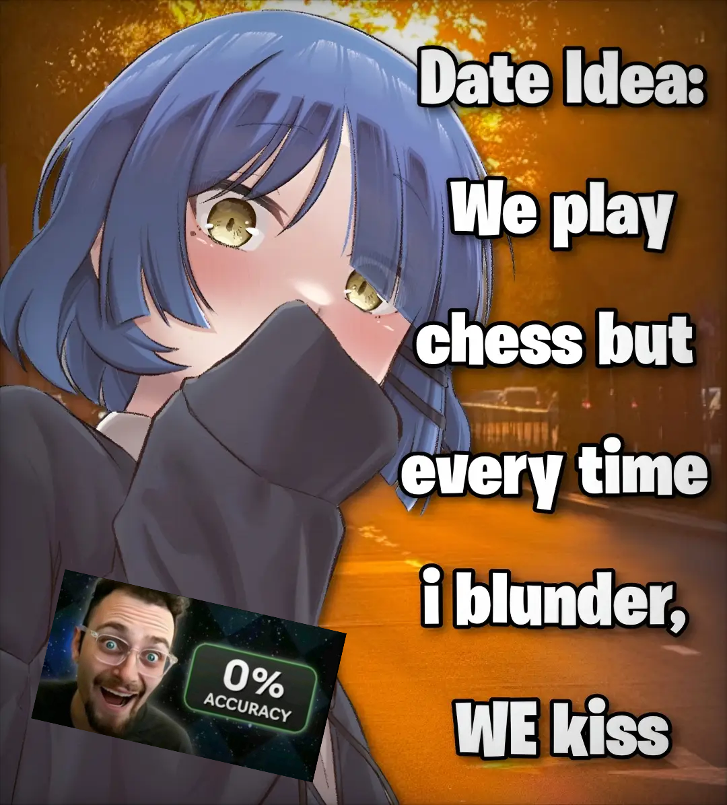

Офлайн-соревнования по шахматным задачам для клубов, школ и мероприятий
Проблема
В поезде, лагере, на выездном занятии или в аудитории с плохим Wi‑Fi трудно быстро устроить общее соревнование.
Глобальные сервисы требуют стабильного доступа к сети и внешнему сервису.
У части игроков нет аккаунта или подходящего доступа к платформе.
Тренеру приходится возвращаться к таймерам и ручному подсчёту.
Решение
Ведущий создаёт комнату на телефоне или планшете
Игроки сканируют QR-код и подключаются
Все получают одинаковую последовательность задач
Приложение считает решения, ошибки и время
Связь работает по Bluetooth или локальному Wi‑Fi. Задачи хранятся в приложении или у ведущего, поэтому внешний интернет не нужен.
Первые пользователи
Проводят короткие соревновательные тренировки для групп учеников.
Нуждаются в готовом формировании раундов и прозрачном подсчёте результата.
Работают в условиях нестабильного интернета и без обязательных аккаунтов.
Ищут быстрый формат для клубных встреч и тематических мероприятий.
Игровые режимы
Кто решит больше задач за 90 секунд или 3 минуты.
Игрок решает задачи, пока не допустит три ошибки.
Два игрока проходят одну последовательность задач.
Команда передаёт эстафету: следующий игрок получает задачу после решения предыдущей.
Аналоги
Веб-сайт Chess.com заблокирован в России, а его режимы работают через внешний онлайн-сервис.
У Lichess есть Puzzle Racer, но нет локального офлайн-формата с ведущим и командной эстафетой.
Работает в одной аудитории без внешнего интернета и обязательных аккаунтов.
Добавляет ведущего, общий старт, локальное табло и режим Relay.
Ценность для клиента
Игроки получают быстрый соревновательный формат и рейтинг внутри клуба.
Ведущий запускает раунд и видит результаты без таблиц и секундомеров.
Клуб использует тематические задания для регулярных тренировок.
Базовые локальные игры доступны бесплатно. Подписка Pro для тренера или клуба открывает большие комнаты, собственные наборы задач, историю раундов, аналитику ошибок и экспорт результатов.
Запрос на проект
Эта оценка покрывает мобильный клиент, локальное взаимодействие между устройствами, игровую логику четырёх режимов и офлайн-каталог задач.
Следующий шаг: проверить MVP на первой живой группе в шахматном клубе или университете.
